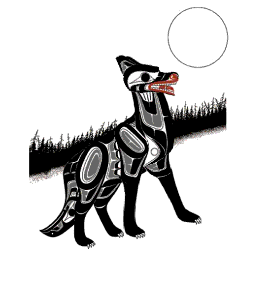
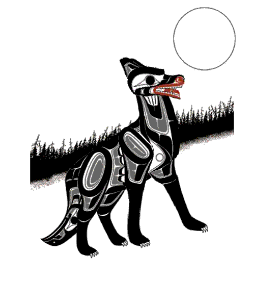
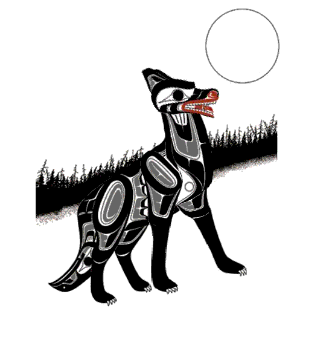

Click Image to go to Flash Animation.

Richard Shorty is a first nation's artist offering world-class native designs. Richard is a self taught artist with a natural talent for designing original native paintings with his own style of hiding picture in picture. Richard has been painting for over thirty years, going through many different phases of his life allowing him to grow artistically and spiritually with every painting.Richards work is sold and displayed throughout the world giving people a chance to learn more about native culture and tradition as well as Canada's rich history. Richard lives his life for his family, his art and his strong spiritual belief.